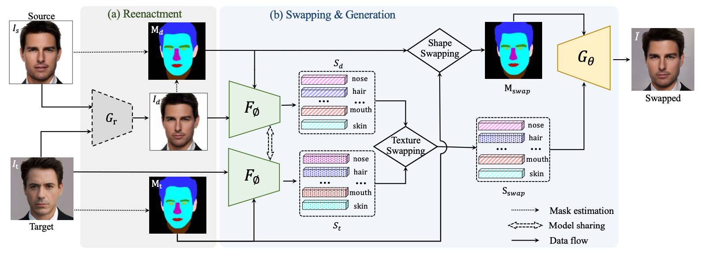

Fine-Grained Face Swapping via Regional GAN Inversion
Zhian Liu1*
Maomao Li2*
Yong Zhang2*
Cairong Wang3
Qi Zhang2
Jue Wang2
Yongwei Nie1
1South China University of Technology
2Tencent AI Lab
3Tsinghua Shenzhen International Graduate School
*: equal contributions, : corresponding author

Abstract
We present a novel paradigm for high-fidelity face swapping that
faithfully preserves the desired subtle geometry and texture details.
We rethink face swapping from the perspective of fine-grained face
editing, i.e., “editing for swap-ping” (E4S), and propose a framework
that is based on the explicit disentanglement of the shape and texture
of facial components. Following the E4S principle, our framework enables
both global and local swapping of facial features, as well as controlling
the amount of partial swapping specified by the user. Furthermore, the E4S
paradigm is inherently capable of handling facial occlusions by means of
facial masks. At the core of our system lies a novel Regional GAN Inversion
(RGI) method, which allows the explicit disentanglement of shape and texture.
It also allows face swapping to be performed in the latent space of StyleGAN.
Specifically, we design a multi-scale mask-guided encoder to project the
texture of each facial component into regional style codes. We also design
a mask-guided injection module to manipulate the feature maps with the style
codes. Based on the disentanglement, face swapping is reformulated as a
simplified problem of style and mask swapping. Extensive experiments and
comparisons with current state-of-the-art methods demonstrate the superiority
of our approach in preserving texture and shape details, as well as working
with high resolution images.
Proposed E4S framework

Overview of our proposed E4S framework. (a) For the source image \(I_s\) and the target \(I_t\),
a reenactment network \(G_r\) is used to drive \(I_s\) to show similar pose and expression
towards \(I_t\), obtaining \(I_d\). The segmentation masks of \(I_t\) and \(I_d\) are also estimated.
(b) The driven and target pairs \((I_d, M_d)\) and \((I_t, M_t)\) are fed into the
mask-guided encoder \(F_{\phi}\) to extract the per-region style codes to depict the texture respectively,
producing texture codes \(S_d\) and \(S_t\). We then swap the masks and the corresponding texture codes,
and send them to the pre-trained StyleGAN generator \(G_{\theta}\) with a mask-guided injection module
to synthesize the swapped face \(\tilde{I}\).
Regional GAN inversion
The core of our E4S framework relies on a novel regional GAN inversion approach,
which precisely encodes the per-region texture that is disentangled with its shape.
Reference
Z. Liu, M. Li, Y. Zhang, C. Wang, Q. Zhang, J. Wang and Y. Nie, Fine-Grained Face Swapping via Regional GAN Inversion, 2022.
@misc{liuE4S,
Author = {Zhian Liu and Maomao Li and Yong Zhang and Cairong Wang and Qi Zhang and Jue Wang and Yongwei Nie},
Title = {Fine-Grained Face Swapping via Regional GAN Inversion},
Year = {2022},
Eprint = {arXiv:2211.14068},
}
Acknowledgements:
This work was done when Zhian was an intern at Tencent AI Lab.
Website template is borrowed from GANalyze.